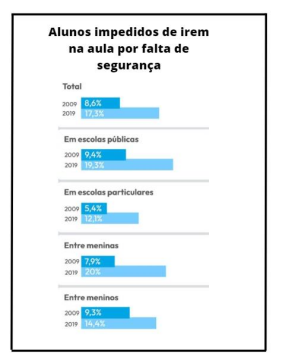

Mulher (empresária) que gerencia um bar diz como vão os negócios dentro da Unisinos!
Este texto falará sobre a profissão de empresário e a entrevista que fizemos com a empresária Eliane, dona de um bar dentro da Unisinos. Fica aí um trecho da entrevista - “Gerencio este bar há 19 anos, antigamente recebíamos aproximadamente 300 clientes por dia. Mas atualmente recebemos aproximadamente 20 clientes por dia.” - diz a empresária Eliane.
Empresário é a pessoa responsável por gerenciar os negócios da empresa, tomar decisões que ajudem a empresa. Sendo um cargo com várias responsabilidades e deveres. Agora que já foi explicado o que é um empresário e qual sua função, vamos mostrar alguns trechos de uma entrevista que fizemos com uma empresária que é dona de um bar na Unisinos! Perguntamos para Eliane como é gerenciar o próprio negócio e ela responde - “Gerenciar a empresa é algo que requer muito envolvimento, e não é fácil, porque além de gerenciar a empresa, eu treino os funcionários, faço compras e tenho minha vida em casa”. Aqui é possível ver que o gerenciamento de uma empresa não é um trabalho fácil, pois o empresário deve comprar produtos para revendê-los e assim lucrar, gerenciar as tarefas dos funcionários e gerenciar a empresa
"Quais as maiores dificuldades do emprego? Atualmente a maior dificuldade é a falta de público.”
Perguntamos à entrevistada sobre as maiores dificuldades do emprego, ela respondeu: “Atualmente a maior dificuldade é a falta de público dentro da Unisinos, pois mudou muito. Antigamente a gente tinha um volume de atendimento de 300 pessoas por dia, hoje está em 20 pessoas por dia!”. Isso que acabamos de apresentar é um grande problema, pois, com o passar dos anos o público vai mudando, menos pessoas frequentam o lugar, os costumes e o próprio consumo, também mudam e assim acaba por se perder vários clientes. A última pergunta que fizemos foi sobre a opinião de Eliane quanto a aposentadoria e ela respondeu: “Poderia ser mais cedo a aposentadoria, pois eu mesma já trabalhei muito com serviço pesado né, gerenciar uma empresa não é uma tarefa simples. Além de que você terá que se aposentar com uma idade muito avançada”. Com isso concluímos nossa entrevista com a empresária Eliane. Com essas informações é possível concluir que ser empresário é bom por você ter seu próprio negócio e poder gerenciá-lo, porém tem suas dificuldades, que variam de acordo com a época, local e conforme a própria atividade da empresa.
Segurança da escola Senac de São Leopoldo é entrevistado e fala como é trabalhar para o Senac dentro da Unisinos!
Este texto falará sobre a profissão de segurança e a entrevista que fizemos com um segurança da escola Senac SL. Fica aí um trecho da entrevista - "A profissão foi logo que fiquei 5 anos nas forças armadas, daí sai e então fui buscar um emprego em um ramo mais parecido no que eu fazia no quartel, e acabei ficando 20 anos pra mais nessa profissão" diz o segurança após perguntarem o motivo de ter escolhido esta profissão.
Segurança é a pessoa responsável por cuidar e observar o lugar em que trabalha, como foi dito, o segurança tem uma extrema importância em diversos lugares para poder manter a segurança de quem os contratou, ele se arrisca e faz de tudo para proteger seu cliente. Agora que já foi falado como é esta profissão, iremos mostrar algumas perguntas que foram feitas ao segurança que trabalha no Senac Unisinos. Bem, primeiro perguntamos para ele se ele tem alguma dificuldade com o emprego, ele disse "no momento é de deslocamento, eu moro em Canoas (e a Unisinos fica em São Leopoldo) e todo dia é 40km ida e volta." como podemos ver, não é nada fácil ele se deslocar até seu trabalho, mas isso mostra o quanto ele é dedicado. Mesmo com esse custo, ele faz o possivel para chegar ao seu trabalho e exercê-lo.
Essa imagem mostra um segurança em serviço, que tem como função proteger algo ou alguém.
"Vale a pena o trabalho?
"Vale, vale, por que eu já trabalhei em escola, faculdade e eu me adapto melhor em trabalhar assim com alunos e professores" está foi a frase que o segurança disse após perguntarmos a ele se vale a pena ou não o trabalho como segurança no Senac. Perguntamos também se é perigoso o trabalho, ele disse que no momento, no Senac, "não há nenhum perigo, até por que fazemos um serviço diferenciado, não é um serviço total de segurança, é mais de apoio". Como podemos ver, não é tão fácil como pensávamos um trabalho de segurança, mesmo para ele, que não faz um trabalho total de segurança, que é mais de apoio como foi dito, é muito complicado para ele se deslocar, sair de Canoas (aonde mora) e vir até São Leopoldo trabalhar. Enfim, concluímos aqui nossa entrevista com o segurança do Senac Unisinos e percebemos que as vezes o trabalho pode ser mais seguro, porém os custos são maiores, mas existem outros casos em que o trabalho é mais perigoso, mas não foi o caso com o entrevistado.
Gráfico mostra porcentagens de alunos impedidos de irem para aula por não possuir seguranças.
